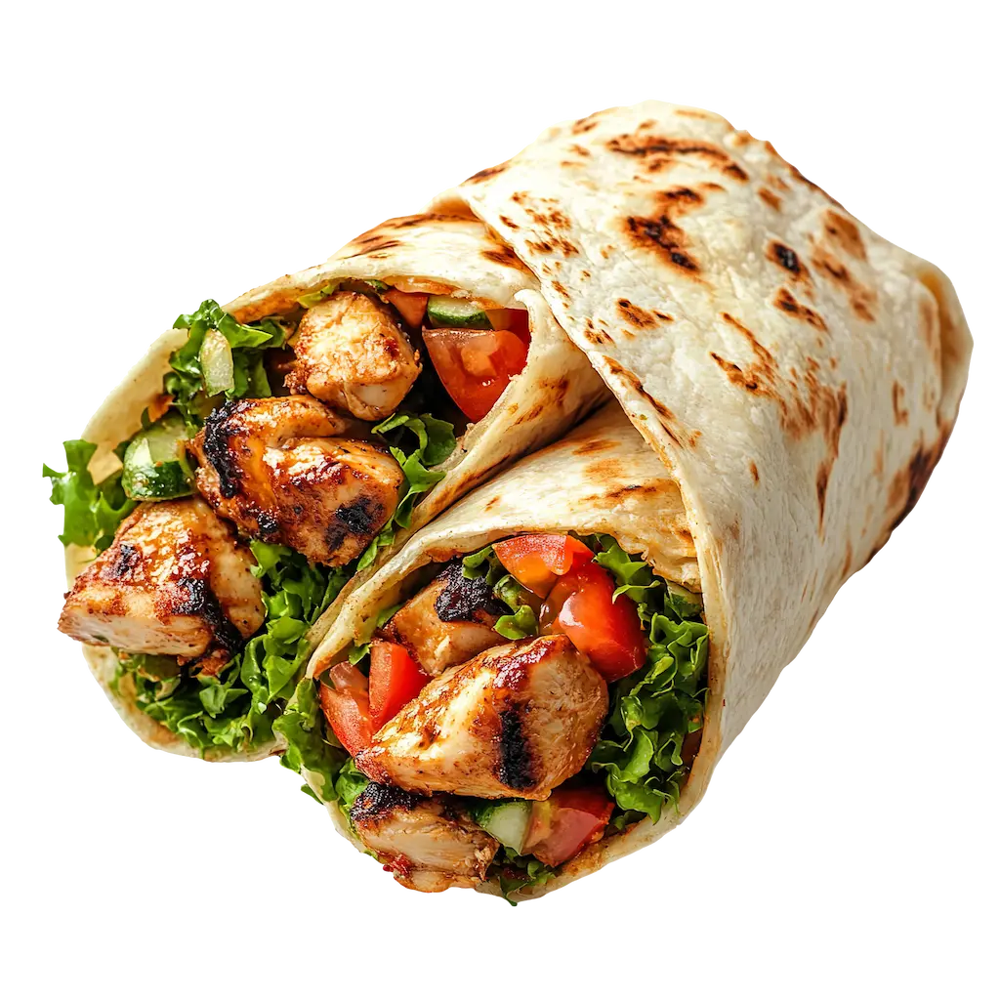

Wrap Integral de Pollo y Vegetales
Tiempo: 20 minutos · Dificultad: Fácil · Porciones: 2

Preparación
- Sazona las tiras de pollo con sal, pimienta y ajo en polvo.
- En una sartén a fuego medio con un hilo de aceite de oliva, cocina el pollo durante 6 a 8 minutos hasta que esté bien dorado y cocido por dentro.
- En un tazón pequeño, mezcla el yogurt griego (o mayonesa) con la mostaza Dijon, una pizca de sal y pimienta para crear el aderezo.
- Calienta ligeramente las tortillas integrales durante 10 segundos en un comal o sartén para que estén flexibles y fáciles de doblar.
- Unta una capa generosa del aderezo sobre el centro de cada tortilla integral.
- Distribuye una cama de espinacas o lechuga, agrega las tiras de pollo caliente, el pimiento, la zanahoria rallada y las láminas de aguacate.
- Dobla los extremos laterales de la tortilla hacia adentro y luego enrolla firmemente desde la base hacia arriba para cerrar el wrap.
- Corta en diagonal por la mitad y sirve de inmediato.
¡Una cena fresca, equilibrada y deliciosa lista en minutos!
Tips de nuestra comunidad
Descubre recetas, combinaciones y secretos compartidos por otros amantes de la cocina. ¿Tienes un secreto de cocina?
Compártelo con la comunidad.
Pasa el wrap armado por una plancha o sartén caliente durante 1 minuto por lado para sellarlo y darle un toque dorado y crujiente por fuera.
Puedes sustituir la pechuga de pollo por tiras de tofu salteado con salsa de soya si prefieres una opción vegetariana.